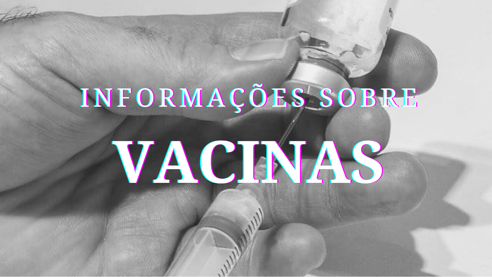

Fique atualizado em tempo real com notícias sobre o covid19 com o Saúde+.
De acordo com os últimos resultados de eficácia apresentados em testes com 9242 participantes voluntários, chegamos a uma conclusão: a vacina do Butantan é extremamente segura.
A eficácia da vacina na diminuição da doença foi demonstrada em situações de alta exposição à Covid-19. Nos casos graves e moderados, a eficácia foi de 100%, nos leves de 78% e nos casos muito leves, a eficácia foi de 50,38%. Vacina no Butantan, 100% a vacina do Brasil.
Os testes clínicos e os últimos resultados de eficácia revelam que temos hoje uma vacina extremamente segura: a vacina do Butantan. Ela carrega 120 anos de um legado de história, tradição e muita confiança. É com esta vacina que eu, Natália Pasternak, quero me imunizar. É com a vacina do Butantan que eu quero vacinar os meus pais.
Last updated 3 mins ago
A vacina do Butantan será aplicada em duas doses, com intervalo de 14 a 28 dias entre elas. Os primeiros a serem vacinados serão pessoas a partir de 75 anos ou mais, profissionais de saúde, indígenas e quilombolas.
vacinas produzidas pelo Butantan são seguras, sim. Isso porque é utilizada a técnica de vírus inativos, que produz anticorpos, porém com pouquíssimas reações no organismo. É assim com a vacina da gripe, fabricada pelo Butantan, e também será assim com a vacina contra a Covid-19, que em breve chegará até você.
Last updated 3 mins ago
Esclarecer os números do risco de evolução para a Covid-19 é de fundamental importância. Quem toma a vacina do Butantan não tem nenhuma chance de evoluir para estado moderado ou grave e ser hospitalizado. Quem se imuniza, tem 22,04% de chances de ter sintomas leves ou precisar de atendimento ambulatorial.
Quem for imunizado com a vacina do Butantan, tem 50,38% de chances de ficar assintomático ou de ter sintomas muito leves. Se é do Butantan pode confiar, é 100% a vacina do Brasil.
Last updated 3 mins ago
A COVID-19 foi descoberta no final de 2019 em Wuhan, China. Desde então, a doença, declarada com pandemia, tem acometido progressivamente diferentes grupos populacionais em todo o mundo.
O termo “segunda onda da pandemia” diz respeito a novos surtos que podem ocorrer após um declínio inicial na taxa de contaminados pelo vírus. Desde o início da pandemia, os virologistas já alertavam esse possível acontecimento e deixaram como recomendação manter os cuidados sugeridos pelos órgãos de saúde pública, mesmo que haja um achatamento na curva de infectados.